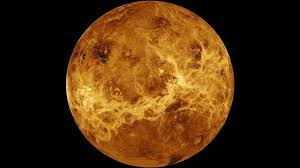
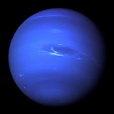
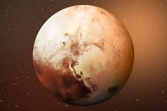
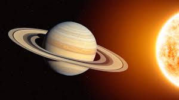
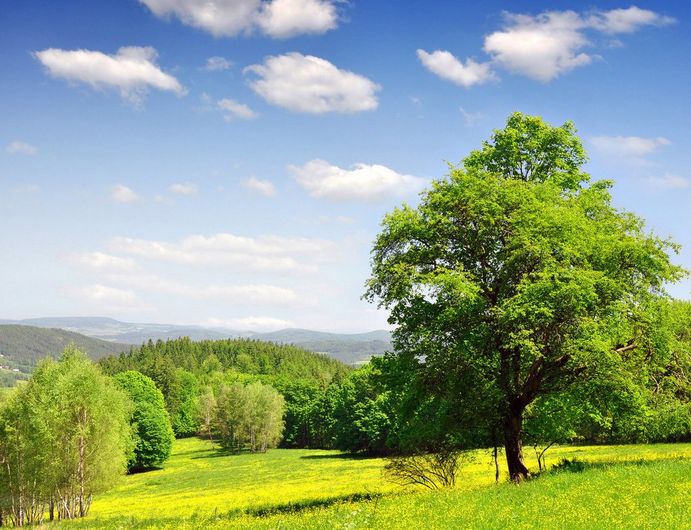
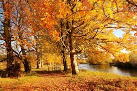
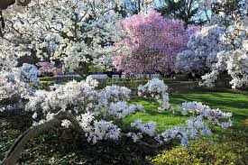
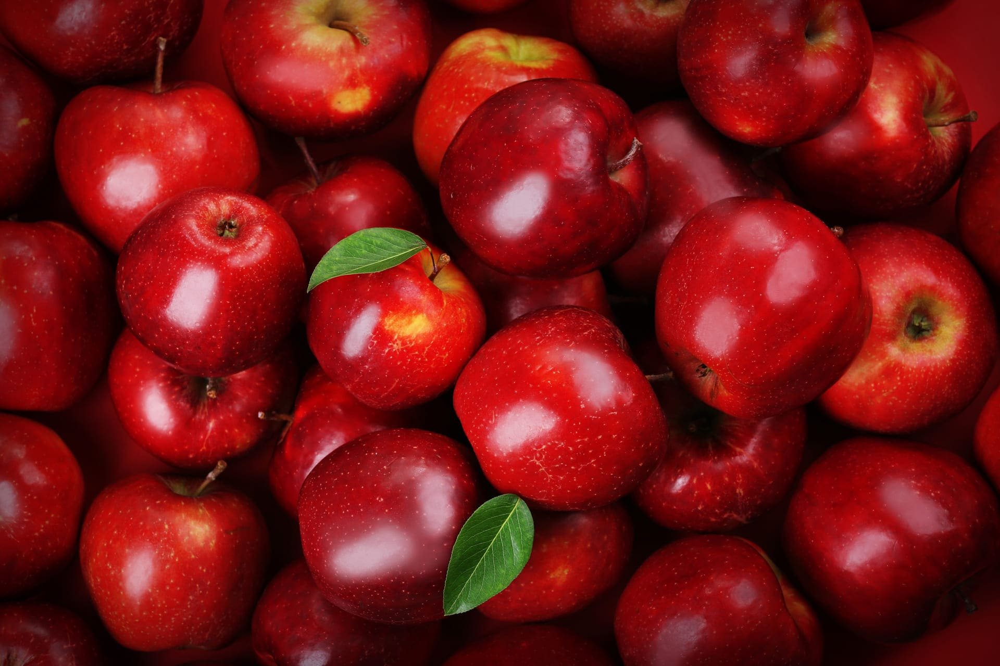
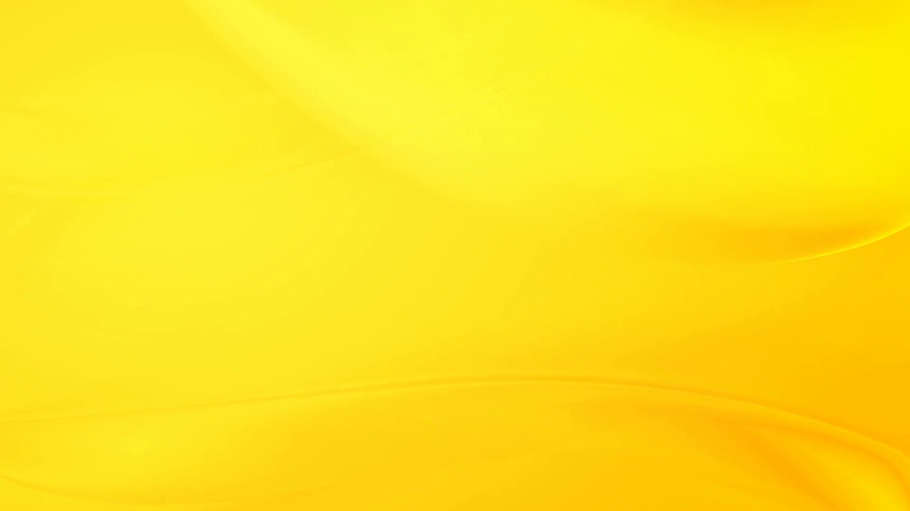
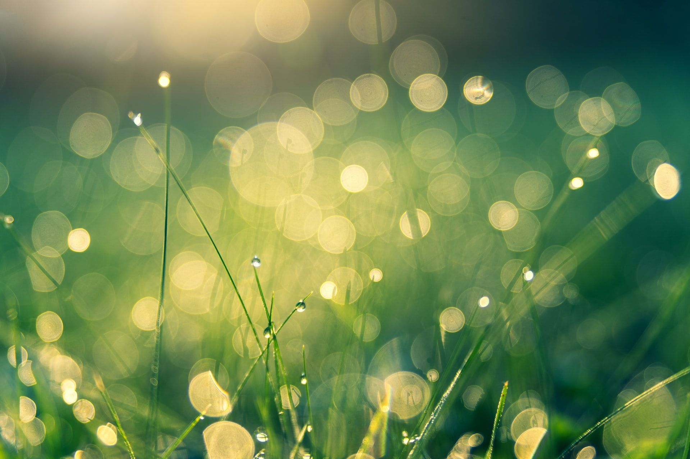

Задание 1




Задание 2
Задание 3



Задание 4




Задание 5
Задание 6
Задание 7
В названии эриметроидного захвата просматривается название артефакта, усиливающего захват — эриметра.
Иногда планеты показывают так называемые «видеоматериалы прошлого». Это можно увидеть на планетах с «защитным
поясом», на котором присутствует голографический экран. Там можно увидеть древнего фэянина или древнего
человека.
У доминаторов есть своё особое оружие, за починку и модернизацию которого нужно давать не только кредиты, а ещё
и небольшую партию нодов. Это оружие — Вертикс, Торпедный аппарат и ИМХО-9000.
Если у правительства взять квест на уничтожение какого-либо корабля, то иногда игра сама его выполняет. К
примеру, если корабль находится в системе, атакованной доминаторами, они могут его уничтожить, или же корабль
погибнет от пиратов.
Если все бизнес-центры уничтожат доминаторы, а у вас при этом был кредит, то его никому не надо возвращать,
деньги остаются вам. Но если у вас в бизнес-центре был депозит, вы его потеряете навсегда.
Если перед посадкой на планету на которой вас ждёт награда, за освобождение или за задание, все артефакты,
имеющиеся у вас, предварительно оставить на соседней планете, то вероятность получения артефакта в награду резко
возрастает.
На просторах галактики можно встретить необитаемые планеты под названием «Рай» (голубая планета) и «Ад» (красная
планета). Так же иногда можно найти жилую планету «Еврейский Дом».
Космические рейнджеры 2: Доминаторы. Перезагрузка
Основная статья: Космические рейнджеры 2: Доминаторы. Перезагрузка
7 сентября 2007 года Elemental Games, СНК-Games и Katauri Interactive выпустили переиздание под названием
«Космические рейнджеры 2: Доминаторы. Перезагрузка». Оно содержит в себе первую и дополненную вторую части
«Космических рейнджеров» и «ФанАрт» — сборник творчества (мини-игр, картинок, обоев, заставок) поклонников
серии. Во вторую часть дополнение добавляет новые режимы игры, экран корабля, типы корпусов и новое оборудование
с дополнительными характеристиками, а также текстовые квесты и карты планетарных боёв.